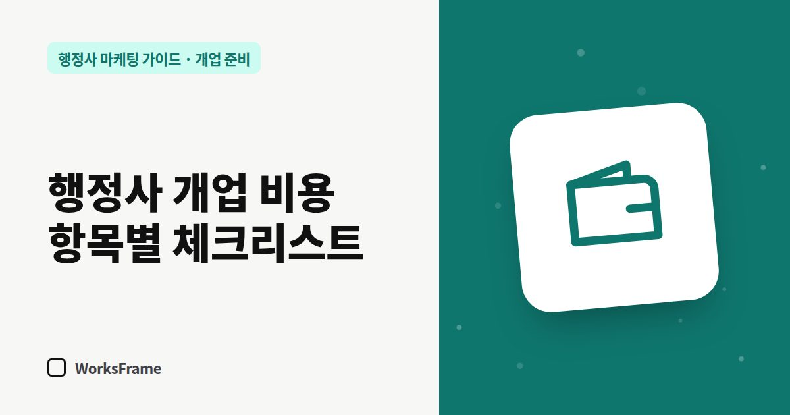

개업 준비
행정사 개업 비용 체크리스트 — 한 번 드는 돈과 매달 드는 돈
한 줄 답
한 번 드는 돈(보증금·장비·명함·홈페이지)과 매달 드는 돈(월세·통신·회비·홈페이지 운영·광고)으로 나눠 표를 채워 보세요. 네이버 플레이스·카톡 채널·검색 등록은 등록 자체가 무료입니다.

행정사 개업 비용은 지역과 사무실 조건에 따라 차이가 커서 “얼마면 된다”고 말하기 어렵습니다. 대신 빠뜨리기 쉬운 항목을 나눠 두면 견적을 받을 때 비교가 쉬워집니다. 아래 표에 금액을 직접 채워 보세요.
한 번 드는 비용
| 항목 | 내용 | 메모 |
|---|---|---|
| 사무실 보증금 | 임대 조건에 따라 | 공유오피스는 보증금이 낮은 편 |
| 인테리어·가구 | 책상, 상담 테이블, 수납 | 상담 공간 분리 여부 |
| 장비 | 노트북, 복합기(스캔), 문서 파쇄기 | 고객 서류 보안 |
| 간판·층 안내 | 건물 규정 확인 | 1층 안내판 가능 여부 |
| 행정사회 가입 | 행정사회 안내 확인 | 업무신고 서류에 회원증 필요 |
| 명함·서식 인쇄 | 명함, 위임장·계약서 양식 | QR 넣을 자리 |
| 홈페이지 제작 | 제작 방식에 따라 크게 다름 | 방식 비교 |
| 도메인 | 보통 1년 1~3만 원 | 사무소 명의로 결제 |
매달 드는 비용
| 항목 | 내용 |
|---|---|
| 월세·관리비 | 공유오피스는 회의실 이용료 포함 여부 확인 |
| 통신 | 휴대폰, 사무실 전화, 인터넷 |
| 소프트웨어 | 클라우드 저장소, 전자서명, 회계 |
| 행정사회 회비 | 행정사회 안내 확인 |
| 홈페이지 운영 | 호스팅·유지보수 또는 구독 |
| 광고비 | 검색광고를 한다면 (선택) |
줄여도 되는 것, 줄이면 안 되는 것
- 줄여도 되는 것 — 처음부터 큰 사무실, 비싼 인테리어, 효과를 모르는 광고 장기 계약
- 줄이면 안 되는 것 — 고객 서류를 다루는 장비와 보안, 상담 공간, 고객이 사무소를 찾는 온라인 창구
온라인 창구 중 네이버 플레이스, 카카오톡 채널, 구글 비즈니스 프로필, 검색 등록은 등록 자체에 돈이 들지 않습니다. 시간이 들 뿐입니다.
광고비는 언제부터?
광고는 “들어온 사람이 머무를 곳”이 준비된 뒤에 시작해야 효과를 가늠할 수 있습니다. 홈페이지와 플레이스를 채우고, 광고를 한다면 소액으로 시작해 문의 수를 기록하세요. 자세한 내용은 검색광고 시작 전에 알아둘 것에 정리했습니다.
자주 묻는 질문
홈페이지는 개업 비용에 넣어야 하나요, 매달 비용에 넣어야 하나요?
제작 방식에 따라 다릅니다. 한 번에 만드는 외주 제작은 개업 비용에, 구독형은 매달 비용에 들어갑니다. 구독형은 초기 비용을 줄이는 대신 약정 조건을 꼭 확인하세요.
개업 초기에 가장 먼저 쓰면 좋은 돈은?
고객이 사무소를 “찾고 믿게” 만드는 데 쓰는 돈입니다. 플레이스 사진, 홈페이지, 명함처럼 한 번 만들면 계속 일하는 것부터 챙기세요.